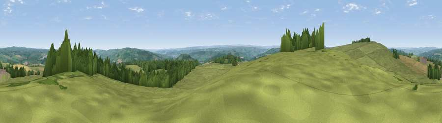

Viewpoint near Walwick
#10150 in England · top 17% of its area beats it · near WalwickWhere it is
The exact computed spot (NY 88775 70925). Click the marker for map links.
The view, rendered

A 360° render of this exact spot computed from the terrain model, tree cover and land cover — summer colours, afternoon light, calibrated against photographs of famous viewpoints. Real trees, hedges and buildings will differ in detail.
The panorama
Grey silhouette: terrain skyline in each direction (720 bearings, Earth curvature and refraction included). Dashed green: skyline with trees (+15 m) and buildings (+8 m) as obstacles. Blue strip: how far the ground is visible on each bearing.
Where the view opens
Wedge length = distance to the farthest visible ground on that bearing (vegetation-aware). Rings at 10, 25 and 50 km.
What fills the view
66% grassland · 19% woodland · 15% cropland ·
Angular shares of the visible panorama (visual magnitude), not map area. Landscape diversity 0.40 (0–1 Shannon).
Key numbers
More beautiful places nearby
The staircase of upgrades: each row has a higher view potential than everything closer. Driving times are estimates from straight-line distance, calibrated against real road routing — check an actual route before setting out.
| Place | Direction | Drive | Score |
|---|---|---|---|
| Viewpoint near Fourstones | SSE · 3 km | ~8 min | 71.4 |
| Viewpoint near West Woodburn | NNE · 14 km | ~25 min | 73.4 |
| Viewpoint near Greenside | ESE · 25 km | ~41 min | 74.2 |
| Viewpoint near Allenheads | SSW · 27 km | ~43 min | 74.6 |
| Darden Rigg | NNE · 27 km | ~44 min | 77.0 |
| Viewpoint near Hepple | NNE · 31 km | ~48 min | 82.4 |
| Viewpoint c12273_7856 | N · 43 km | ~63 min | 83.7 |
| Viewpoint c12396_7887 | N · 49 km | ~70 min | 85.7 |
55.03272, -2.17715 · source: screening · position refined by local search. Computed location — check access rights before visiting.